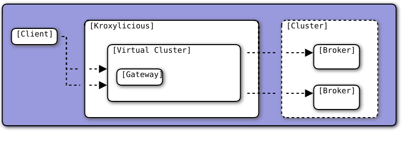
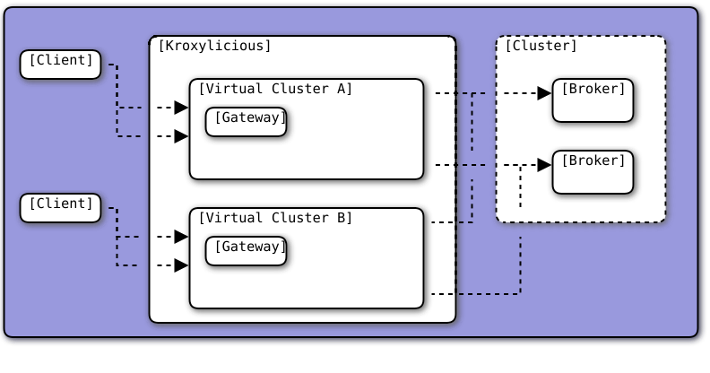

1. Kroxylicious overview
Kroxylicious is an Apache Kafka protocol-aware ("Layer 7") proxy designed to enhance Kafka-based systems. Through its filter mechanism it allows additional behavior to be introduced into a Kafka-based system without requiring changes to either your applications or the Kafka cluster itself. Built-in filters are provided as part of the solution.
Functioning as an intermediary, the Kroxylicious mediates communication between a Kafka cluster and its clients. It takes on the responsibility of receiving, filtering, and forwarding messages.
An API provides a convenient means for implementing custom logic within the proxy.
1.1. Why use proxies?
Proxies are a powerful and flexible architectural pattern. For Kafka, they can be used to add functionality to Kafka clusters which is not available out-of-the-box with Apache Kafka. In an ideal world, such functionality would be implemented directly in Apache Kafka. But there are numerous practical reasons that can prevent this, for example:
-
Organizations having very niche requirements which are unsuitable for implementation directly in Apache Kafka.
-
Functionality which requires changes to Kafka’s public API and which the Apache Kafka project is unwilling to implement. This is the case for broker interceptors, for example.
-
Experimental functionality which might end up being implemented in Apache Kafka eventually. For example using Kroxylicious it’s easier to experiment with alternative transport protocols, such as Quic, or operating system APIs, such as io_uring, because there is already support for this in Netty, the networking framework on which Kroxylicious is built.
1.1.1. How Kroxylicious works
First let’s define the concepts in the landscape surrounding Kroxylicious.
-
Kafka Client, or Client refers to any client application using a Kafka Client library to talk to a Kafka Cluster.
-
Kafka Cluster or Cluster refers to a cluster comprising one or more Kafka Brokers.
-
Downstream refers to the area between Kafka Client and Kroxylicious.
-
Upstream refers to the area between Kroxylicious and a Kafka Cluster.

Now let’s define some concepts used within Kroxylicious itself.
Virtual cluster
The Virtual Cluster is the downstream representation of a Kafka Cluster. At the conceptual level, a Kafka Client connects to a Virtual Cluster. Kroxylicious proxies all communications made to the Virtual Cluster through to a (physical) Kafka Cluster, passing it through the Filter Chain.
Virtual cluster gateway
Each virtual cluster has one or more dedicated gateways, which Kafka clients use to establish connections.
Each gateway exposes a bootstrap endpoint, which the Kafka Client must specify in its configuration as the bootstrap.servers property.
In addition to the bootstrap endpoint, the gateway automatically exposes broker endpoints. There is one broker endpoint for each broker of the physical cluster. When the Client connects to a broker endpoint, Kroxylicious proxies all communications to the corresponding broker of the (physical) Kafka Cluster.
Kroxylicious automatically intercepts all the Kafka RPC responses that contain a broker address. It rewrites the address so that it refers to the corresponding broker endpoint of the Virtual Cluster. This means when the Kafka Client goes to connect to, say broker 0, it does so through the Virtual Cluster.
Defining multiple gateways for a virtual cluster is useful when exposing it across different network segments. For example, in Kubernetes, you might configure one gateway for on-cluster traffic and another for off-cluster traffic.
Target cluster
The Target Cluster is the definition of physical Kafka Cluster within the Kroxylicious itself.
A Virtual Cluster has exactly one Target Cluster.
There can be a one-to-one relationship between Virtual Clusters and Target Clusters. The other possibility is many-to-one, where many Virtual Clusters point to the same Target Cluster. The many-to-one pattern is exploited by filters such as the Multi-tenancy filter.


A one-to-many pattern, where one Virtual Cluster points to many Target Clusters (providing amalgamation), is not a supported use-case.
Filter chain
A Filter Chain consists of an ordered list of pluggable protocol filters.
A protocol filter implements some logic for intercepting, inspecting and/or manipulating Kafka protocol messages.
Kafka protocol requests (such as Produce requests) pass sequentially through each of the protocol filters in the
chain, beginning with the 1st filter in the chain and then following with the subsequent filters, before being
forwarded to the broker.
When the broker returns a response (such as a Produce response) the protocol filters in the chain are invoked in the
reverse order (that is, beginning with the nth filter in the chain, then the n-1th and so on) with each having the
opportunity to inspect and/or manipulating the response. Eventually a response is returned to the client.
The description above describes only the basic capabilities of the protocol filter. Richer features of filters are described later.

As mentioned above, Kroxylicious takes the responsibility to rewrite the Kafka RPC responses that carry broker address
information so that they reflect the broker addresses exposed by the Virtual Cluster. These are the
Metadata,
DescribeCluster and
FindCoordinator responses. This processing is
entirely transparent to the work of the protocol filters. Filter authors are free to write their own filters that
intercept these responses too.
Filter composition
An important principal for the protocol filter API is that filters should compose nicely. That means that filters generally don’t know what other filters might be present in the chain, and what they might be doing to messages. When a filter forwards a request or response it doesn’t know whether the message is being sent to the next filter in the chain, or straight back to the client.
Such composition is important because it means a proxy user can configure multiple filters (possibly written by several filter authors) and expect to get the combined effect of all of them.
It’s never quite that simple, of course. In practice they will often need to understand what each filter does in some detail in order to be able to operate their proxy properly, for example by understanding whatever metrics each filter is emitting.
1.1.2. Implementation
The proxy is written in Java, on top of Netty.
The usual ChannelHandlers provided by the Netty project are used where appropriate (e.g. SSL support uses SslHandler), and Kroxylicious provides Kafka-specific handlers of its own.
The Kafka-aware parts use the Apache Kafka project’s own classes for serialization and deserialization.
Protocol filters get executed using a handler-per-filter model.
1.1.3. Deployment topologies
The proxy supports a range of possible deployment topologies. Which style is used depends on what the proxy is meant to achieve, architecturally speaking. Broadly speaking a proxy instance can be deployed:
- As a forward proxy
-
Proxying the access of one or more clients to a particular cluster/broker that might also accessible (to other clients) directly.
Topic-level encryption provides one example use case for a forward proxy-style deployment. This might be applicable when using clients that don’t support interceptors, or if an organization wants to apply the same encryption policy in a single place, securing access to the keys within their network.
- As a reverse proxy
-
Proxying access for all clients trying to reach a particular cluster/broker.
Transparent multi-tenancy provides an example use case for a reverse proxy. While Apache Kafka itself has some features that enable multi-tenancy, they rely on topic name prefixing as the primary mechanism for ensuring namespace isolation. Tenants have to adhere to the naming policy and know they’re a tenant of a larger shared cluster.
Transparent multi-tenancy means each tenant has the illusion of having their own cluster, with almost complete freedom over topic and group naming, while still actually sharing a cluster.
We can further classify deployment topologies in how many proxy instances are used. For example:
-
Single proxy instance (sidecar)
-
Proxy pool
1.2. Compatibility
1.2.1. APIs
Kroxylicious follows Semantic Versioning rules. While we are still in the initial development phase (denoted by a major version 0), we still take API compatibility very seriously. We aim to provide at least two minor releases between deprecation and the removal of that deprecated item.
We also consider our configuration file syntax a public API (though not the Java model backing it). As such, the syntax follows the same Semantic Versioning and deprecation rules.
Kubernetes custom resources are a public API, and we are making every effort to evolve Kroxylicious custom resources in line with Kubernetes best practices. Kubernetes resources have their own versioning scheme, which is independent of the Kroxylicious proxy service version. As a result, we may reach version 1.0.0 of Kroxylicious while still using alpha or beta versions of the custom resources.
Third-party plugins
Kroxylicious supports loading third-party plugins to extend the core functionality of the project. While these plugins are configured and loaded as first-class entities within Kroxylicious, we cannot guarantee the compatibility of their APIs or configuration properties.
We do however hold filters and plugins provided by the project to the same standards as the rest of the public API.
1.2.2. Wire protocol
Kroxylicious offers the same backwards and forwards compatibility guarantees as Apache Kafka. We support the same range of client and broker versions as the official Apache Kafka Java client.
2. Built-in filters
Kroxylicious comes with a suite of built-in filters designed to enhance the functionality and security of your Kafka clusters.
2.1. Record Encryption filter
Kroxylicious’s Record Encryption filter enhances the security of Kafka messages. The filter uses industry-standard cryptographic techniques to apply encryption to Kafka messages, ensuring the confidentiality of data stored in the Kafka Cluster. Kroxylicious centralizes topic-level encryption, ensuring streamlined encryption across Kafka clusters.
There are three steps to using the filter:
-
Setting up a Key Management System (KMS).
-
Establishing the encryption keys within the KMS that will be used to encrypt the topics.
-
Configuring the filter within Kroxylicious.
The filter integrates with a Key Management Service (KMS), which has ultimate responsibility for the safe storage of sensitive key material. The filter relies on a KMS implementation. Currently, Kroxylicious integrates with either HashiCorp Vault or AWS Key Management Service. You can provide implementations for your specific KMS systems. Additional KMS support will be added based on demand.
2.1.1. How encryption works
The Record Encryption filter uses envelope encryption to encrypt records with symmetric encryption keys. The filter encrypts records from produce requests and decrypts records from fetch responses.
- Envelope encryption
-
Envelope encryption is an industry-standard technique suited for encrypting large volumes of data in an efficient manner. Data is encrypted with a Data Encryption Key (DEK). The DEK is encrypted using a Key Encryption Key (KEK). The KEK is stored securely in a Key Management System (KMS).
- Symmetric encryption keys
-
AES(GCM) 256 bit encryption symmetric encryption keys are used to encrypt and decrypt record data.
The process is as follows:
-
The filter intercepts produce requests from producing applications and transforms them by encrypting the records.
-
The produce request is forwarded to the broker.
-
The filter intercepts fetch responses from the broker and transforms them by decrypting the records.
-
The fetch response is forwarded to the consuming application.
The filter encrypts the record value only. Record keys, headers, and timestamps are not encrypted.
The entire process is transparent from the point of view of Kafka clients and Kafka brokers. Neither are aware that the records are being encrypted, nor do they have any access to the encryption keys or have any influence on the ciphering process to secure the records.
How the filter encrypts records
The filter encrypts records from produce requests as follows:
-
Filter selects a KEK to apply.
-
Requests the KMS to generate a DEK for the KEK.
-
Uses an encrypted DEK (DEK encrypted with the KEK) to encrypt the record.
-
Replaces the original record with a ciphertext record (encrypted record, encrypted DEK, and metadata).
The filter uses a DEK reuse strategy. Encrypted records are sent to the same topic using the same DEK until a time-out or an encryption limit is reached.
How the filter decrypts records
The filter decrypts records from fetch responses as follows:
-
Filter receives a cipher record from the Kafka broker.
-
Reverses the process that constructed the cipher record.
-
Uses KMS to decrypt the DEK.
-
Uses the decrypted DEK to decrypt the encrypted record.
-
Replaces the cipher record with a decrypted record.
The filter uses an LRU (least recently used) strategy for caching decrypted DEKs. Decrypted DEKs are kept in memory to reduce interactions with the KMS.
How the filter uses the KMS
To support the filter, the KMS provides the following:
-
A secure repository for storing Key Encryption Keys (KEKs)
-
A service for generating and decrypting Data Encryption Keys (DEKs)
KEKs stay within the KMS. The KMS generates a DEK (which is securely generated random data) for a given KEK, then returns the DEK and an encrypted DEK. The encrypted DEK has the same data but encrypted with the KEK. The KMS doesn’t store encrypted DEKs; they are stored as part of the cipher record in the broker.
| The KMS must be available during runtime. If the KMS is unavailable, the filter will not be able to obtain new encrypted DEKs on the produce path or decrypt encrypted DEKs on the consume path. The filter will continue to use previously obtained DEKs, but eventually, production and consumption will become impossible. It is recommended to use the KMS in a high availability (HA) configuration. |
Practicing key rotation
Key rotation involves periodically replacing cryptographic keys with new ones and is considered a best practice in cryptography.
The filter allows the rotation of Key Encryption Keys (KEKs) within the Key Management System (KMS). When a KEK is rotated, the new key material is eventually used for newly produced records. Existing records, encrypted with older KEK versions, remain decryptable as long as the previous KEK versions are still available in the KMS.
| If your encrypted topic is receiving regular traffic, the Data Encryption Key (DEK) will be refreshed as new records flow through. However, if messages are infrequent, the DEK might be used for up to 2 hours (by default) after its creation. |
When the KEK is rotated in the external KMS, it will take up to 1 hour (by default) before all{fn-dek-refresh} records produced by the filter contain a DEK encrypted with the new key material. This is because existing encrypted DEKs are used for a configurable amount of time after creation, the Filter caches the encrypted DEK, one hour after creation they are eligible to be refreshed.
If you need to rotate key material immediately, execute a rolling restart of your cluster of Kroxylicious instances.
| If an old KEK version is removed from the KMS, records encrypted with that key will become unreadable, causing fetch operations to fail. In such cases, the consumer offset must be advanced beyond those records. |
What part of a record is encrypted?
The record encryption filter encrypts only the values of records, leaving record keys, headers, and timestamps untouched. Null record values, which might represent deletions in compacted topics, are transmitted to the broker unencrypted. This approach ensures that compacted topics function correctly.
Unencrypted topics
You may configure the system so that some topics are encrypted and others are not. This supports scenarios where topics with confidential information are encrypted and Kafka topics with non-sensitive information can be left unencrypted.
-
For more information on envelope encryption, see the NIST Recommendation for Key Management.
2.1.2. Setting up HashiCorp Vault
To use HashiCorp Vault with the Record Encryption filter, use the following setup:
-
Enable the Transit Engine as the Record Encryption filter relies on its APIs.
-
Create a Vault policy specifically for the filter with permissions for generating and decrypting Data Encryption Keys (DEKs) for envelope encryption.
-
Obtain a Vault token that includes the filter policy.
Enable the Transit Engine
The filter integrates with the HashiCorp Vault Transit Engine. Vault does not enable the Transit Engine by default. It must be enabled before it can be used by the filter.
Vault Transit Engine URL
The Vault Transit Engine URL is required so the filter knows the location of the Transit Engine within the Vault instance.
The URL is formed from the concatenation of the Api Address (reported by Vault reported by during
starts up) with the
complete path to Transit Engine, including the name of the engine itself. If
Namespacing is used on the Vault instance, the path needs to include the
namespace(s). The URL will end with /transit unless the -path parameter was used when
enabling the engine.
If namespacing is not in use, the URL will look like this:
https://myvaultinstance:8200/v1/transitIf namespacing is in use, the path must include the namespaces. For example, if there is a parent namespace is a and
a child namespace is b, the URL will look like this:
https://myvaultinstance:8200/v1/a/b/transitIf the name of the Transit engine was changed (using the -path argument to the vault secrets enable transit command)
the URL will look like this:
https://myvaultinstance:8200/v1/mytransitEstablish the naming convention for keys within Vault hierarchy
Establish a naming convention for keys to keep the filter’s keys separate from those used by other systems. Here, we use a prefix of KEK_ for filter key name. Adjust the instructions if a different naming convention is used.
Role of the administrator
To use the filter, an administrator or an administrative process must create the encryption keys within Vault, which are used by the envelope encryption process.
The organization deploying the Record Encryption filter is responsible for managing this administrator or process.
The administrator must have permissions to create keys beneath transit/keys/KEK_* in the Vault hierarchy.
As a guideline, the minimal Vault policy required by the administrator is as follows:
path "transit/keys/KEK_*" {
capabilities = ["read", "write"]
}Establish an application identity for the filter
The filter must authenticate to Vault in order to perform envelope encryption operations, such as generating and decrypting DEKs Therefore, a Vault identity with sufficient permissions must be created for the filter.
Create a Vault policy for the filter:
vault policy write kroxylicious_encryption_filter_policy - << EOF
path "transit/keys/KEK_*" {
capabilities = ["read"]
}
path "/transit/datakey/plaintext/KEK_*" {
capabilities = ["update"]
}
path "transit/decrypt/KEK_*" {
capabilities = ["update"]
}
EOFCreate a Periodic (long-lived) Vault Token for the filter:
vault token create -display-name "kroxylicious record encryption" \
-policy=kroxylicious_encryption_filter_policy \
-period=768h \ (1)
-no-default-policy \ (2)
-orphan (3)| 1 | Causes the token to be periodic (with every renewal using the given period). |
| 2 | Detach the "default" policy from the policy set for this token. This is done so the token has least-privilege. |
| 3 | Create the token with no parent. This is done so that expiration of a parent won’t expire the token used by the filter. |
The example token create command illustrates the use of -no-default-policy
and -orphan. The use of these flags is not functionally important.
You may adapt the configuration of the token to suit the standards required by your organization.
|
The token create command yields the token. The token value is required later when configuring the vault within the
filter.
token hvs.CAESIFJ_HHo0VnnW6DSbioJ80NqmuYm2WlON-QxAPmiJScZUGh4KHGh2cy5KdkdFZUJMZmhDY0JCSVhnY2JrbUNEWnE
token_accessor 4uQZJbEnxW4YtbDBaW6yVzwP
token_policies [kroxylicious_encryption_filter_policy]The token must be renewed before expiration. It is the responsibility of the administrator to do this.
This can be done with a command like the following:
vault token renew --accessor <token_accessor>Testing the application identity for the filter using the CLI
To test whether the application identity and the policy are working correctly, a script can be used.
First, as the administrator, create a KEK in the hierarchy at this path transit/keys/KEK_testkey.
VAULT_TOKEN=<kroxylicious encryption filter token> validate_vault_token.sh <kek path>The script should respond Ok.
If errors are reported check the policy/token configuration.
transit/keys/KEK_testkey can now be removed.
Configuring the HashiCorp Vault KMS
For HashiCorp Vault, the KMS configuration looks like this. Use the Vault Token and Vault Transit Engine URL values from the KMS setup.
kms: VaultKmsService (1)
kmsConfig:
vaultTransitEngineUrl: <vault transit engine service url> (2)
tls: (3)
vaultToken: (4)
passwordFile: /opt/vault/token| 1 | Specifies the name of the KMS provider. Use VaultKmsService. |
| 2 | Vault Transit Engine URL including the protocol part, such as https: or http:. |
| 3 | (Optional) TLS trust configuration. |
| 4 | File containing the Vault Token. |
For TLS trust and TLS client authentication configuration, the filter accepts the same TLS parameters as Upstream TLS
except the PEM store type is currently not supported.
Creating HashiCorp Vault keys
As the administrator, use either the HashiCorp UI or CLI to create AES-256 symmetric keys following your
key naming convention. The key type must be aes256-gcm96, which is Vault’s default key type.
| It is recommended to use a key rotation policy. |
If using the Vault CLI, the command will look like:
vault write -f transit/keys/KEK_trades type=aes256-gcm96 auto_rotate_period=90d2.1.3. Setting up AWS KMS
To use AWS Key Management Service with the Record Encryption filter, use the following setup:
-
Establish an AWS KMS aliasing convention for keys
-
Configure the AWS KMS
-
Create AWS KMS keys
You’ll need a privileged AWS user that is capable of creating users and policies to perform the set-up.
Establish an aliasing convention for keys within AWS KMS
The filter references KEKs within AWS via an AWS key alias.
Establish a naming convention for key aliases to keep the filter’s keys separate from those used by other systems. Here, we use a prefix of KEK_ for filter aliases. Adjust the instructions if a different naming convention is used.
Role of the administrator
To use the filter, an administrator or an administrative process must create the encryption keys within AWS KMS, which are used by the envelope encryption process.
The organization deploying the Record Encryption filter is responsible for managing this administrator or process.
The administrator must have permissions to create keys in AWS KMS.
As a starting point, the built-in AWS policy AWSKeyManagementServicePowerUser confers sufficient key management privileges.
To get started, use the following commands to set up an administrator with permissions suitable for managing encryption keys in KMS through an AWS Cloud Shell.
This example illustrates using the user name kroxylicious-admin, but you can choose a different name if preferred.
Adjust the instructions accordingly if you use a different user name.
ADMIN=kroxylicious-admin
INITIAL_PASSWORD=$(aws secretsmanager get-random-password --output text)
CONSOLE_URL=https://$(aws sts get-caller-identity --query Account --output text).signin.aws.amazon.com/console
aws iam create-user --user-name ${ADMIN}
aws iam attach-user-policy --user-name ${ADMIN} --policy-arn arn:aws:iam::aws:policy/AWSKeyManagementServicePowerUser
aws iam attach-user-policy --user-name ${ADMIN} --policy-arn arn:aws:iam::aws:policy/IAMUserChangePassword
aws iam attach-user-policy --user-name ${ADMIN} --policy-arn arn:aws:iam::aws:policy/AWSCloudShellFullAccess
aws iam create-login-profile --user-name ${ADMIN} --password "${INITIAL_PASSWORD}" --password-reset-required
echo Now log in at ${CONSOLE_URL} with user name ${ADMIN} password "${INITIAL_PASSWORD}" and change the password.Create an alias-based policy for KEK aliases
Create an alias-based policy granting permissions to use keys aliased by the established alias naming convention.
AWS_ACCOUNT_ID=$(aws sts get-caller-identity --query Account --output text)
cat > /tmp/policy << EOF
{
"Version": "2012-10-17",
"Statement": [
{
"Sid": "AliasBasedIAMPolicy",
"Effect": "Allow",
"Action": [
"kms:Encrypt",
"kms:Decrypt",
"kms:GenerateDataKey*",
"kms:DescribeKey"
],
"Resource": [
"arn:aws:kms:*:${AWS_ACCOUNT_ID}:key/*"
],
"Condition": {
"ForAnyValue:StringLike": {
"kms:ResourceAliases": "alias/KEK_*"
}
}
}
]
}
EOF
aws iam create-policy --policy-name KroxyliciousRecordEncryption --policy-document file:///tmp/policyEstablish an authentication mechanism for the filter
The filter must authenticate to AWS in order to perform envelope encryption operations, such as generating and decrypting DEKs.
Authenticating using long-term IAM identity
This procedure describes how to create a long-term IAM identity for the Record Encryption filter to authenticate to AWS KMS. The process involves creating an IAM user and access key, and attaching an alias-based policy that grants permissions to perform KMS operations on specific KEKs.
| Do not enable console access for this user. The filter requires only API access, and console access would unnecessarily increase the security risk. |
-
Access to the AWS CLI with sufficient permissions to create and manage IAM users.
-
An alias-based policy created for the Record Encryption filter.
-
Create the IAM user and access key:
aws iam create-user --user-name kroxylicious aws iam create-access-key --user-name kroxyliciousThis example uses
kroxyliciousas the user name, but you can substitute a different name if necessary. -
Attach the alias-based policy to the IAM identity:
AWS_ACCOUNT_ID=$(aws sts get-caller-identity --query Account --output text) aws iam attach-user-policy --user-name kroxylicious --policy-arn "arn:aws:iam::${AWS_ACCOUNT_ID}:policy/KroxyliciousRecordEncryption"This step grants the user permission to perform KMS operations on KEKs that use the alias naming convention defined in the
KroxyliciousRecordEncryptionpolicy. -
Verify that the policy has been successfully attached:
aws iam list-attached-user-policies --user-name kroxylicious
Authenticating using AWS EC2 metadata
This procedure describes how to use AWS EC2 metadata for the Record Encryption filter to authenticate to AWS KMS. The process involves creating a trust policy, creating an IAM role, and attaching an alias-based policy that grants permissions to perform KMS operations on specific KEKs.
The filter authenticates using the temporary credentials retrieved from EC2 instance metadata.
-
Access to the AWS CLI with sufficient permissions to create and manage IAM users.
-
An alias-based policy created for the Record Encryption filter.
-
Create a trust policy:
cat > trustpolicy << EOF { "Version": "2012-10-17", "Statement": [ { "Effect": "Allow", "Action": [ "sts:AssumeRole" ], "Principal": { "Service": [ "ec2.amazonaws.com" ] } } ] } EOFThe trust policy specifies that the EC2 instance can assume the role, enabling it to retrieve and use temporary credentials for authentication.
-
Create the IAM role using the trust policy:
aws iam create-role --role-name KroxyliciousInstance --assume-role-policy-document file://trustpolicyThis example uses
KroxyliciousInstanceas the role name, but you can substitute a different name if necessary. -
Attach the alias-based policy to the role:
AWS_ACCOUNT_ID=$(aws sts get-caller-identity --query Account --output text) aws iam attach-role-policy --policy-arn arn:aws:iam::${AWS_ACCOUNT_ID}:policy/KroxyliciousRecordEncryption --role-name KroxyliciousInstanceThis step grants the role permission to perform KMS operations on KEKs that use the alias naming convention defined in the
KroxyliciousRecordEncryptionpolicy. -
Verify that the policy has been successfully attached:
aws iam list-attached-role-policies --role-name KroxyliciousInstance -
Associate the role with the EC2 instance:
aws ec2 associate-iam-instance-profile --instance-id <EC2_instance_id> --iam-instance-profile Name="KroxyliciousInstance"Replace
<EC2_instance_id>with the instance ID of each AWS EC2 instance hosting a Kroxylicious instance. -
Verify that the role has been associated with the EC2 instance:
aws ec2 describe-iam-instance-profile-associations --filters Name=instance-id,Values=<EC2_instance_id>
Configuring the AWS KMS
This section provides example AWS KMS configuration for authenticating with AWS KMS services.
kms: AwsKmsService (1)
kmsConfig:
endpointUrl: https://kms.<region>.amazonaws.com (2)
tls: (3)
longTermCredentials:
accessKeyId:
passwordFile: /opt/aws/accessKey (4)
secretAccessKey:
passwordFile: /opt/aws/secretKey (5)
region: <region> (6)| 1 | Specifies the name of the KMS provider. Use AwsKmsService. |
| 2 | AWS KMS endpoint URL, which must include the https:// scheme. |
| 3 | (Optional) TLS trust configuration. |
| 4 | File containing the AWS access key ID. |
| 5 | File containing the AWS secret access key. |
| 6 | The AWS region identifier, such as us-east-1, specifying where your KMS resources are located.
This must match the region of the KMS endpoint you’re using. |
kms: AwsKmsService (1)
kmsConfig:
endpointUrl: https://kms.<region>.amazonaws.com (2)
ec2MetadataCredentials:
iamRole: <name_of_IAM_role> (3)
metadataEndpoint: <EC2_metadata_endpoint> (4)
credentialLifetimeFactor: 0.8 (5)
region: <region> (6)| 1 | Specifies the name of the KMS provider. Use AwsKmsService. |
| 2 | AWS KMS endpoint URL, which must include the https:// scheme. |
| 3 | Name of the IAM role associated with the EC2 instance(s) hosting Kroxylicious. |
| 4 | (Optional) Metadata endpoint used to obtain EC2 metadata.
Defaults to http://169.254.169.254/.
If using IPv6, use http://[fd00:ec2::254] instead. |
| 5 | (Optional) Factor used to determine when to refresh a credential before it expires.
Defaults to 0.8, which means the credential is refreshed once it reaches 80% of its lifetime. |
| 6 | The AWS region identifier, such as us-east-1, specifying where your KMS resources are located.
This must match the region of the KMS endpoint you’re using. |
For TLS trust and TLS client authentication configuration, the filter accepts the same TLS parameters as Upstream TLS
except the PEM store type is currently not supported.
Creating AWS KMS keys
As the administrator, use either the AWS Console or CLI to create a Symmetric key with Encrypt and decrypt usage. Multi-region keys are supported.
| It is not possible to make use of keys from other AWS accounts. For more information on this limitation, see the issue for AWS KMS serde improvements. |
Give the key an alias as described in Establish an aliasing convention for keys within AWS KMS.
If using the CLI, this can be done with commands like this:
KEY_ALIAS="KEK_<name>"
KEY_ID=$(aws kms create-key | jq -r '.KeyMetadata.KeyId')
# the create key command will produce JSON output including the KeyId
aws kms create-alias --alias-name alias/${KEY_ALIAS} --target-key-id ${KEY_ID}Once the key is created, it is recommended to use a key rotation policy.
aws kms enable-key-rotation --key-id ${KEY_ID} --rotation-period-in-days 1802.1.4. Setting up Fortanix Data Security Manager (DSM)
To use Fortanix Data Security Manager (DSM) with the Record Encryption filter, use the following setup:
-
Establish a naming convention for keys and decide in which group the keys will live
-
Create an application identity, with an API key, for use by the Record Encryption filter.
-
Create keys within Fortanix DSM.
Integrate with Fortanix DSM
The filter integrates with the Fortanix Data Security Manager (DSM). Both Fortanix DSM software-as-a service (SaaS) or an on-premise installation are supported.
These instructions assume that you are using the Fortanix DSM CLI, but you can use the Fortanix DSM user interface if preferred.
Fortanix DSM Cluster URL
The Record Encryption filter requires the URL of the Fortanix DSM cluster.
If you are using SaaS, the URL looks like https://<region>.smartkey.io where region is an identifier such as amer.
For more information, see the link: Fortanix documentation.
If using an on-premises instance, talk to the group responsible for it within your organization to find out the URL you should use.
Establish a naming convention for keys within Fortanix DSM
Establish a naming convention for keys to keep the filter’s keys separate from those used by other systems.
Here, we use a prefix of KEK_ for filter key name.
Choose the Fortanix DSM groups to keep the keys. Here, we assume a group name of topic-keks.
Adjust the instructions if a different naming convention is used.
Role of the administrator
To use the filter, an administrator or an administrative process must create the encryption keys within Fortanix DSM, which are used by the envelope encryption process.
The organization deploying the Record Encryption filter is responsible for managing this administrator or process.
The administrator must have permissions to create keys with Fortanix DSM.
Establish an application identity for the filter
The filter must authenticate to Fortanix DSM in order to perform the encryption and decryption operations.
Create a Fortanix DSM App with sufficient permissions for the filter:
sdkms-cli --api-endpoint https://<region>.smartkey.io create-app --name kroxylicious --default-group topic-keks --groups topic-keksNRetrieve the API key for the app:
sdkms-cli --api-endpoint https://<region>.smartkey.io get-app-api-key --name kroxyliciousThe Record Encryption filter uses the API Key in its KMS configuration to authenticate to Fortanix DSM.
Configuring the Fortanix DSM KMS
For Fortanix DSM, the KMS configuration looks like this. Use the API key and Fortanix DSM Cluster URL values from the KMS setup.
kms: FortanixDsmKmsService (1)
kmsConfig:
endpointUrl: <Fortanix DSM Cluster URL> (2)
apiKeySessionProvider:
apiKey:
passwordFile: /opt/fortanix-dsm/api-key (3)| 1 | Specifies the name of the KMS provider. Use FortanixDsmKmsService. |
| 2 | Fortanix DSM Cluster URL including the protocol part, such as https: or http:. |
| 3 | File containing the API key. |
Creating Fortanix DSM keys
As the administrator, create AES-256 symmetric keys following your key naming convention and belonging to the required group.
When creating keys specify the key operations as ENCRYPT,DECRYPT,APPMANAGEABLE.
These are the minimal permissions required for record encryption to function.
Identify the ID of the group to contain the keys:
GROUP_ID=$(sdkms-cli --api-endpoint https://<region>.smartkey.io list-groups | grep topic-keks | awk '{print $1}')For example, here we extract the ID of the group named topic-keks.
Create a key and associate it with the group:
KEY_NAME="KEK_<name>"
sdkms-cli --api-endpoint https://<region>.smartkey.io create-key --obj-type AES --key-size 256 --group-id ${GROUP_ID} --name ${KEY_NAME} --key-ops ENCRYPT,DECRYPT,APPMANAGEABLE| It is recommended to use a key rotation policy. |
2.1.5. Setting up the Record Encryption filter
This procedure describes how to set up the Record Encryption filter. Provide the filter configuration and the Key Encryption Key (KEK) selector to use. The KEK selector maps topic name to key names. The filter looks up the resulting key name in the KMS.
-
An instance of Kroxylicious. For information on deploying Kroxylicious, see the samples and examples.
-
A config map for Kroxylicious that includes the configuration for creating virtual clusters and filters.
-
A KMS is installed and set up for the filter with KEKs to encrypt records set up for topics.
-
Configure a
RecordEncryptiontype filter.Example Record Encryption filter configurationfilters: - type: RecordEncryption config: kms: <kms_service_name> (1) kmsConfig: <kms_specific_config> (2) # ... selector: <KEK_selector_service_name> (3) selectorConfig: template: "KEK_$(topicName)" (4) unresolvedKeyPolicy: PASSTHROUGH_UNENCRYPTED (5) experimental: encryptionDekRefreshAfterWriteSeconds: 3600 (6) encryptionDekExpireAfterWriteSeconds: 7200 (7) maxEncryptionsPerDek: 5000000 (8)1 The KMS service name. 2 Configuration specific to the KMS provider. 3 The Key Encryption Key (KEK) selector to use. The $(topicName)is a literal understood by the proxy. For example, if using theTemplateKekSelectorwith the templateKEK_$(topicName), create a key for every topic that is to be encrypted with the key name matching the topic name, prefixed by the stringKEK_.4 The template for deriving the KEK, based on a specific topic name. 5 Optional policy governing the behaviour when the KMS does not contain a key. The default is PASSTHROUGH_UNENCRYPTEDwhich causes the record to be forwarded, unencrypted, to the target cluster. Users can alternatively specifyREJECTwhich will cause the entire produce request to be rejected. This is a safer alternative if you know that all traffic sent to the Virtual Cluster should be encrypted because unencrypted data will never be forwarded.6 How long after creation of a DEK before it becomes eligible for rotation. On the next encryption request, the cache will asynchronously create a new DEK. Encryption requests will continue to use the old DEK until the new DEK is ready. 7 How long after creation of a DEK until it is removed from the cache. This setting puts an upper bound on how long a DEK can remain cached. 8 The maximum number of records any DEK should be used to encrypt. After this limit is hit, that DEK will be destroyed and a new one created. encryptionDekRefreshAfterWriteSecondsandencryptionDekExpireAfterWriteSecondshelp govern the "originator usage period" of the DEK. That is the period of time the DEK will be used to encrypt records. Keeping the period short helps reduce the blast radius in the event that DEK key material is leaked. However, there is a trade-off. The additional KMS API calls will increase produce/consume latency and may increase your KMS provider costs.maxEncryptionsPerDekhelps prevent key exhaustion by placing an upper limit of the amount of times that a DEK may be used to encrypt records. -
Verify that the encryption has been applied to the specified topics by producing messages through the proxy and then consuming directly and indirectly from the Kafka cluster.
| If the filter is unable to find the key in the KMS, the filter passes through the records belonging to that topic in the produce request without encrypting them. |
2.2. (Preview) Multi-tenancy filter
Kroxylicious’s Multi-tenancy filter presents a single Kafka cluster to tenants as if it were multiple clusters. Operations are isolated to a single tenant by prefixing resources with an identifier.
| This filter is currently in incubation and available as a preview. We would not recommend using it in a production environment. |
The Multi-tenancy filter works by intercepting all Kafka RPCs (remote procedure calls) that reference resources, such as topic names and consumer group names:
- Request path
-
On the request path, resource names are prefixed with a tenant identifier.
- Response path
-
On the response path, the prefix is removed.
Kafka RPCs that list resources are filtered so that only resources belonging to the tenant are returned, effectively creating a private cluster experience for each tenant.
To set up the filter, configure it in Kroxylicious.
| While the Multi-tenancy filter isolates operations on resources, it does not isolate user identities across tenants. User authentication and ACLs (Access Control Lists) are shared across all tenants, meaning that identity is not scoped to individual tenants. For more information on open issues related to this filter, see Kroxylicious issues. |
| For more information on Kafka’s support for multi-tenancy, see the Apache Kafka website. |
2.2.1. (Preview) Setting up the Multi-tenancy filter
This procedure describes how to set up the Multi-tenancy filter by configuring it in Kroxylicious.
The filter dynamically prefixes resource names to create isolation between tenants using the same Kafka cluster.
The prefix representing a tenant is taken from the name of the virtual cluster representing the tenant.
For example, if the virtual cluster is named tenant-1, the prefix is tenant-1.
Each tenant must be represented by a unique virtual cluster, and virtual cluster names must be globally unique within the Kroxylicious configuration.
This means that the same virtual cluster name cannot be used to represent different Kafka clusters.
-
An instance of Kroxylicious. For information on deploying Kroxylicious, see the samples and examples.
-
A config map for Kroxylicious that includes the configuration for creating virtual clusters and filters.
-
A virtual cluster definition for each tenant using the Kafka cluster. You need at least two virtual clusters to apply multi-tenancy.
-
Configure a
MultiTenanttype filter.filters: - type: MultiTenant config: prefixResourceNameSeparator: "." (1)1 The separator used for the prefix. If a separator is not specified, -is the default.Currently, only the prefix with separator is validated. -
Verify that multi-tenancy filtering has been applied.
For example, create a topic through each virtual cluster and check that the topics are prefixed with the name of the corresponding virtual cluster.
For more information, see the example for a Kubernetes environment.
2.3. (Preview) Record Validation filter
The Record Validation filter validates records sent by a producer. Only records that pass the validation are sent to the broker. This filter can be used to prevent poison messages—such as those containing corrupted data or invalid formats—from entering the Kafka system, which may otherwise lead to consumer failure.
The filter currently supports two modes of operation:
-
Schema Validation ensures the content of the record conforms to a schema stored in an Apicurio Registry.
-
JSON Syntax Validation ensures the content of the record contains syntactically valid JSON.
Validation rules can be applied to check the content of the Kafka record key or value.
If the validation fails, the product request is rejected and the producing application receives an error response. The broker will not receive the rejected records.
| This filter is currently in incubation and available as a preview. We would not recommend using it in a production environment. |
2.3.1. (Preview) Setting up the Record Validation filter
This procedure describes how to set up the Record Validation filter. Provide the filter configuration and rules that the filter uses to check against Kafka record keys and values.
-
An instance of Kroxylicious. For information on deploying Kroxylicious, see the samples and examples.
-
A config map for Kroxylicious that includes the configuration for creating a virtual cluster.
-
Apicurio Registry (if wanting to use Schema validation).
-
Configure a
RecordValidationtype filter.
filters:
- type: RecordValidation
config:
rules:
- topicNames: (1)
- <topic name>
keyRule:
<rule definition> (2)
valueRule:
<rule definition> (3)
defaultRule: (4)
keyRule:
<rule definition> (2)
valueRule:
<rule definition> (3)| 1 | List of topic names to which the validation rules will be applied. |
| 2 | Validation rules that are applied to the record’s key. |
| 3 | Validation rules that are applied to the record’s value. |
| 4 | (Optional) Default rule that is applied to any topics for which there is no explict rule defined. |
Replace the token <rule definition> in the YAML configuration with either a Schema Validation rule or a JSON Syntax Validation rule depending on your requirements.
The Schema Validation rule validates that the key or value matches a schema identified by its global ID within an Apicurio Schema Registry.
If the key or value does not adhere to the schema, the record will be rejected.
Additionally, if the kafka producer has embedded a global ID within the record it will be validated against the global ID defined by the rule. If they do not match, the record will be rejected. See the
Apicurio documentation for details
on how the global ID could be embedded into the record.
The filter supports extracting ID’s from either the Apicurio globalId record header or from the initial bytes of the serialized content itself.
schemaValidationConfig:
apicurioGlobalId: 1001 (1)
apicurioRegistryUrl: http://registry.local:8080 (2)
allowNulls: true (3)
allowEmpty: true (4)| 1 | Apicurio registry global ID identifying the schema that will be enforced. |
| 2 | Apicurio Registry endpoint. |
| 3 | if true, the validator allows keys and or values to be null. The default is false. |
| 4 | if true, the validator allows keys and or values to be empty. The default is false. |
| Schema validation mode currently has the capability to enforce only JSON schemas (issue) |
The JSON Syntax Validation rule validates that the key or value contains only syntactically correct JSON.
syntacticallyCorrectJson:
validateObjectKeysUnique: true (1)
allowNulls: true (2)
allowEmpty: true (3)| 1 | If true, the validator enforces that objects keys must be unique. The default is false. |
| 2 | if true, the validator allows keys and or values to be null. The default is false. |
| 3 | if true, the validator allows keys and or values to be empty. The default is false. |
2.4. OAUTHBEARER validation
OauthBearerValidation filter enables a validation on the JWT token received from client before forwarding it to cluster.
If the token is not validated, then the request is short-circuited. It reduces resource consumption on the cluster when a client sends too many invalid SASL requests.

2.4.1. How to use the filter
There are two steps to using the filter.
-
Configuring the filter within Kroxylicious.
Configuring the filter within Kroxylicious.
filters:
- type: OauthBearerValidation
config:
jwksEndpointUrl: https://oauth/JWKS (1)
jwksEndpointRefreshMs: 3600000 (2)
jwksEndpointRetryBackoffMs: 100 (3)
jwksEndpointRetryBackoffMaxMs: 10000 (4)
scopeClaimName: scope (5)
subClaimName: sub (6)
authenticateBackOffMaxMs: 60000 (7)
authenticateCacheMaxSize: 1000 (8)
expectedAudience: https://first.audience, https//second.audience (9)
expectedIssuer: https://your-domain.auth/ (10)| 1 | The OAuth/OIDC provider URL from which the provider’s JWKS (JSON Web Key Set) can be retrieved. |
| 2 | The (optional) value in milliseconds for the broker to wait between refreshing its JWKS (JSON Web Key Set) cache that contains the keys to verify the signature of the JWT. |
| 3 | The (optional) value in milliseconds for the initial wait between JWKS (JSON Web Key Set) retrieval attempts from the external authentication provider. |
| 4 | The (optional) value in milliseconds for the maximum wait between attempts to retrieve the JWKS (JSON Web Key Set) from the external authentication provider. |
| 5 | This (optional) setting can provide a different name to use for the scope included in the JWT payload’s claims. |
| 6 | This (optional) setting can provide a different name to use for the subject included in the JWT payload’s claims. |
| 7 | The (optional) maximum value in milliseconds to limit the client sending authenticate request. Setting 0 will never limit the client. Otherwise, an exponential delay is added to each authenticate request until the authenticateBackOffMaxMs has been reached. |
| 8 | The (optional) maximum number of failed tokens kept in cache. |
| 9 | The (optional) comma-delimited setting for the broker to use to verify that the JWT was issued for one of the expected audiences. |
| 10 | The (optional) setting for the broker to use to verify that the JWT was created by the expected issuer. |
Note: OauthBearer config follows kafka’s properties
3. Community filters
Community contributed filters are showcased in the Community Gallery.
| These filters are contributed by the community and are not managed or maintained by the Kroxylicious team. Use them at your own risk. |
4. Custom filters
Custom filters can be written in the Java programming language. Kroxylicious supports Java 17. Knowledge of the Kafka protocol is generally required to write a protocol filter.
There is currently one class of Custom Filters users can implement:
- Protocol filters
-
Allow customisation of how protocol messages are handled on their way to, or from, the Cluster.
The following sections explain in more detail how to write your own filters.
4.1. Sample Custom Filter Project
A collection of sample filters is available within the Kroxylicious repository for you to download, try out, and customise. You can find them here for a hands-on introduction to creating your own custom filters.
4.2. API docs
Custom filters are built by implementing interfaces supplied by the kroxylicious-api module (io.kroxylicious:kroxylicious-api on maven central). You can view the javadoc here.
4.3. Dependencies
How filter classes are loaded is not currently defined by the filter contract. In other words, filters might be loaded using a classloader-per-filter model, or using a single class loader. This doesn’t really make a difference to filter authors except where they want to make use of libraries as dependencies. Because those dependencies might be loaded by the same classloader as the dependencies of other filters there is the possibility of collision. Filter A and Filter B might both want to use Library C, and they might want to use different versions of Library C.
For common things like logging and metric facade APIs it is recommended to use the facade APIs which are also used by the proxy core.
4.4. Protocol filters
A protocol filter is a public top-level, concrete class with a particular public constructor and which implements
one or more protocol filter interfaces. You can implement two distinct types of Custom Protocol Filter:
Note that these types are mutually exclusive, for example a Filter is not allowed to implement both RequestFilter and
MetadataRequestFilter. This is to prevent ambiguity. If we received a MetadataRequest, would it be dispatched to
the onMetadataRequest(..) method of MetadataRequestFilter or the onRequest method of RequestFilter, or both?
Instead, we disallow these combinations, throwing an exception at runtime if your Filter implements incompatible interfaces.
4.4.1. Specific Message Protocol Filters
A filter may wish to intercept specific types of Kafka messages. For example, intercept all Produce Requests, or intercept all Fetch Responses. To support this case Kroxylicious provides an interfaces for all request types and response types supported by Kafka (at the version of Kafka Kroxylicious depends on). A filter implementation can implement any combination of these interfaces.
There is no requirement that a Filter handles both the request and response halves of an RPC. A Filter can choose to intercept only the request, or only the response, or both the request and response.
Examples
To intercept all Fetch Requests your class would implement FetchRequestFilter:
public class FetchRequestClientIdFilter implements FetchRequestFilter {
@Override
public CompletionStage<RequestFilterResult> onFetchRequest(short apiVersion,
RequestHeaderData header,
FetchRequestData request,
FilterContext context) {
header.setClientId("fetch-client!");
return context.forwardRequest(header, request);
}
}To intercept all Fetch Responses your class would implement FetchResponseFilter:
public class FetchRequestClientIdFilter implements FetchResponseFilter {
@Override
public CompletionStage<ResponseFilterResult> onFetchResponse(short apiVersion,
ResponseHeaderData header,
FetchResponseData response,
FilterContext context) {
mutateResponse(response);
return context.forwardResponse(header, response);
}
}To intercept all Fetch Requests and all Fetch Responses your class would implement FetchRequestFilter and FetchResponseFilter:
public class FetchRequestClientIdFilter implements FetchRequestFilter, FetchResponseFilter {
@Override
public CompletionStage<RequestFilterResult> onFetchRequest(short apiVersion,
RequestHeaderData header,
FetchRequestData request,
FilterContext context) {
header.setClientId("fetch-client!");
return context.forwardRequest(header, request);
}
@Override
public CompletionStage<ResponseFilterResult> onFetchResponse(short apiVersion,
ResponseHeaderData header,
FetchResponseData response,
FilterContext context) {
mutateResponse(response);
return context.forwardResponse(header, response);
}
}Specific Message Filter interfaces are mutually exclusive with Request/Response. Kroxylicious will reject invalid combinations of interfaces.
4.4.2. Request/Response Protocol Filters
A filter may wish to intercept every message being sent from the Client to the Cluster or from the Cluster to the Client. To do this your custom filter will implement:
-
RequestFilter to intercept all requests.
-
ResponseFilter to intercept all responses.
Custom filters are free to implement either interface or both interfaces to intercept all messages.
For example:
public class FixedClientIdFilter implements RequestFilter {
@Override
public CompletionStage<RequestFilterResult> onRequest(ApiKeys apiKey,
RequestHeaderData header,
ApiMessage body,
FilterContext filterContext) {
header.setClientId("example!");
return filterContext.forwardRequest(header, body);
}
}Request/Response Filter interfaces are mutually exclusive with Specific Message interfaces. Kroxylicious will reject invalid combinations of interfaces.
4.4.3. The Filter Result
As seen above, filter methods (onXyz[Request|Response]) must return a CompletionStage<FilterResult> object.
It is the job of FilterResult to convey what message is to forwarded to the next filter in the chain (or broker
/client if at the chain’s beginning or end). It is also used to carry instructions such as indicating that the
connection must be closed, or a message dropped.
If the filter returns a CompletionStage that is already completed normally, Kroxylicious will immediately perform
the action described by the FilterResult.
The filter may return a CompletionStage that is not yet completed. When this happens, Kroxylicious will pause
reading from the downstream (the Client writes will eventually block), and it begins to queue up in-flight
requests/responses arriving at the filter. This is done so that message order is maintained. Once the
CompletionStage completes, the action described by the FilterResult is performed, reading from the downstream
resumes and any queued up requests/responses are processed.
The pausing of reads from the downstream is a relatively costly operation. To maintain optimal performance
filter implementations should minimise the occasions on which an incomplete CompletionStage is returned.
|
If the CompletionStage completes exceptionally, the connection is closed. This also applies if the
CompletionStage does not complete within a timeout (20000 milliseconds).
Creating a Filter Result
The FilterContext is the factory for the FilterResult objects.
There are two convenience methods[1] that simply allow a filter to forward a result to the next filter. We’ve already seen these in action above.
-
context.forwardRequest(header, request)used by result filter to forward a request. -
context.forwardResponse(header, response)used by result filter to forward a request.
To access richer features, use the filter result builders context.requestFilterResultBuilder() and
responseFilterResultBuilder().
Filter result builders allow you to:
-
forward a request/response:
.forward(header, request). -
signal that a connection is to be closed:
.withCloseConnection(). -
signal that a message is to be dropped (i.e. not forwarded):
.drop(). -
for requests only, send a short-circuit response:
.shortCircuitResponse(header, response)
The builder lets you combine legal behaviours together. For instance, to close the connection after forwarding a response to a client, a response filter could use:
return context.responseFilterResultBuilder()
.forward(header, response)
.withCloseConnection()
.complete();The builders yield either a completed CompletionStage<FilterResult> which can be returned directly from the
filter method, or bare FilterResult. The latter exists to support asynchronous programming styles allowing you
to use your own Futures.
The drop behaviour can be legally used in very specific circumstances. The Kafka Protocol is,
for the most part, strictly request/response with responses expected in the order the request were sent. The client
will fail if the contract isn’t upheld. The exception is Produce where acks=0. Filters may drop these requests without
introducing a protocol error.
|
4.4.4. The protocol filter lifecycle
Instances of the filter class are created on demand when a protocol message is first sent by a client. Instances are specific to the channel between a single client and a single broker.
It exists while the client remains connected.
4.4.5. Handling state
The simplest way of managing per-client state is to use member fields. The proxy guarantees that all methods of a given filter instance will always be invoked on the same thread (also true of the CompletionStage completion in the case of Sending asynchronous requests to the Cluster). Therefore, there is no need to use synchronization when accessing such fields.
See the io.kroxylicious.proxy.filter
package javadoc for more information on thread-safety.
4.4.6. Filter Patterns
Kroxylicious Protocol Filters support several patterns:
Intercepting Requests and Responses
This is a common pattern, we want to inspect or modify a message. For example:
public class SampleFetchResponseFilter implements FetchResponseFilter {
@Override
public CompletionStage<ResponseFilterResult> onFetchResponse(short apiVersion,
ResponseHeaderData header,
FetchResponseData response,
FilterContext context) {
mutateResponse(response, context); (1)
return context.forwardResponse(header, response); (2)
}
}| 1 | We mutate the response object. For example, you could alter the records that have been fetched. |
| 2 | We forward the response, sending it towards the client, invoking Filters downstream of this one. |
We can only forward the response and header objects passed into the onFetchResponse. New instances are not
supported.
|
Sending Response messages from a Request Filter towards the Client (Short-circuit responses)
In some cases we may wish to not forward a request from the client to the Cluster. Instead, we want to intercept that request and generate a response message in a Kroxylicious Protocol Filter and send it towards the client. This is called a short-circuit response.

For example:
public class CreateTopicRejectFilter implements CreateTopicsRequestFilter {
public CompletionStage<RequestFilterResult> onCreateTopicsRequest(short apiVersion, RequestHeaderData header, CreateTopicsRequestData request,
FilterContext context) {
CreateTopicsResponseData response = new CreateTopicsResponseData();
CreateTopicsResponseData.CreatableTopicResultCollection topics = new CreateTopicsResponseData.CreatableTopicResultCollection(); (1)
request.topics().forEach(creatableTopic -> {
CreateTopicsResponseData.CreatableTopicResult result = new CreateTopicsResponseData.CreatableTopicResult();
result.setErrorCode(Errors.INVALID_TOPIC_EXCEPTION.code()).setErrorMessage(ERROR_MESSAGE);
result.setName(creatableTopic.name());
topics.add(result);
});
response.setTopics(topics);
return context.requestFilterResultBuilder().shortCircuitResponse(response).completed(); (2)
}
}| 1 | Create a new instance of the corresponding response data and populate it. Note you may need to use the apiVersion
to check which fields can be set at this request’s API version. |
| 2 | We generate a short-circuit response that will send it towards the client, invoking Filters downstream of this one. |
This will respond to all Create Topic requests with an error response without forwarding any of those requests to the Cluster.
Closing the connections
There is a useful variation on the pattern above, where the filter needs, in addition to sending an error response, also to cause the connection to close. This is useful in use-cases where the filter wishes to disallow certain client behaviours.
public class DisallowAlterConfigs implements AlterConfigsRequestFilter {
@Override
public CompletionStage<RequestFilterResult> onAlterConfigsRequest(short apiVersion, RequestHeaderData header, AlterConfigsRequestData request,
FilterContext context) {
var response = new AlterConfigsResponseData();
response.setResponses(request.resources().stream()
.map(a -> new AlterConfigsResourceResponse()
.setErrorCode(Errors.INVALID_CONFIG.code())
.setErrorMessage("This service does not allow this operation - closing connection"))
.toList());
return context.requestFilterResultBuilder()
.shortCircuitResponse(response)
.withCloseConnection() (1)
.completed();
}
}| 1 | We enable the close connection option on the builder. This will cause Kroxylicious to close the connection after the response is sent to the client. |
Sending asynchronous requests to the Cluster
Filters can make additional asynchronous requests to the Cluster. This is useful if the Filter needs additional information from the Cluster in order to know how to mutate the filtered request/response.
The Filter can make use of CompletionStage
chaining features ([#thenApply() etc.) to organise for actions to be done once the asynchronous request completes.
For example, it could chain an action that mutates the filtered request/response using the asynchronous response, and
finally, chain an action to forward the request/response to the next filter.
The asynchronous request/response will be intercepted by Filters upstream of this Filter. Filters downstream of this Filter (and the Client) do not see the asynchronous response.
Let’s take a look at an example. We’ll send an asynchronous request towards the Cluster for topic metadata while handling a FetchRequest and use the response to mutate the FetchRequest before passing it to the next filter in the chain.
public class FetchFilter implements FetchRequestFilter {
public static final short METADATA_VERSION_SUPPORTING_TOPIC_IDS = (short) 12;
@Override
public CompletionStage<RequestFilterResult> onFetchRequest(ApiKeys apiKey,
RequestHeaderData header,
FetchRequestData request,
FilterContext context) {
var metadataRequestHeader = new RequestHeaderData().setRequestApiVersion(METADATA_VERSION_SUPPORTING_TOPIC_IDS); (1)
var metadataRequest = new MetadataRequestData(); (2)
var topic = new MetadataRequestData.MetadataRequestTopic();
topic.setTopicId(Uuid.randomUuid());
metadataRequest.topics().add(topic);
var stage = context.sendRequest(metadataRequestHeader, metadataRequest); (3)
return stage.thenApply(metadataResponse -> mutateFetchRequest(metadataResponse, request)) (4)
.thenCompose(mutatedFetchRequest -> context.forwardRequest(header, mutatedFetchRequest)); (5)
}
}| 1 | We construct a header object for the asynchronous request. It is important to specify the API version of the request that is to be used. The version chosen must be a version known to the Kafka Client used by Kroxylicious and must be an API version supported by the Target Cluster. |
| 2 | We construct a new request object. When constructing the request object, care needs to be taken to ensure the request is populated with the structure which matches the API version you have chosen. Refer to the Kafka Protocol Guide for more details. |
| 3 | We asynchronously send the request towards the Cluster and obtain a CompletionStage which will contain the response. |
| 4 | We use a computation stage to mutate the filtered fetch request using the response from the request sent at <3>. |
| 5 | We use another computation stage to forward the mutated request. |
As you have read above, we need to know the API version we want our request to be encoded at. Your filter can discover
what versions of an API the Kafka Cluster supports. To do this use the
ApiVersionsService available from the FilterContext
to determine programmatically what versions of an API are support and then write code to make a suitable request
object.
Kroxylicious provides the guarantee that computation stages chained using the default execution methods are
executed on the same thread as the rest of the Filter work, so we can safely mutate Filter members without synchronising.
See the io.kroxylicious.proxy.filter
package javadoc for more information on thread-safety.
|
Filtering specific API Versions
Kafka has a "bidirectional" client compatibility policy. In other words, new clients can talk to old servers, and old clients can talk to new servers. This allows users to upgrade either clients or servers without experiencing any downtime.
Since the Kafka protocol has changed over time, clients and servers need to agree on the schema of the message that they are sending over the wire. This is done through API versioning.
Before each request is sent, the client sends the API key and the API version. These two 16-bit numbers, when taken together, uniquely identify the schema of the message to follow.
You may wish to restrict your Filter to only apply to specific versions of an API. For example, "intercept all FetchRequest
messages greater than api version 7". To do this you can override a method named shouldHandleXyz[Request|Response] on your filter like:
public class FetchFilter implements FetchRequestFilter {
@Override
public boolean shouldHandleFetchRequest(short apiVersion) {
return apiVersion > 7;
}
@Override
@Override
public CompletionStage<RequestFilterResult> onRequest(ApiKeys apiKey,
RequestHeaderData header,
ApiMessage body,
FilterContext filterContext) {
return context.forwardRequest(header, request);
}
}4.4.7. Filter Construction and Configuration
For Kroxylicious to instantiate and configure your custom filter we use Java’s ServiceLoader API.
Each Custom Filter should provide a corresponding FilterFactory
implementation that can create an instance of your custom Filter. The factory can optionally declare a configuration class that Kroxylicious will
populate (using Jackson) when loading your custom Filter. The module must package a META-INF/services/io.kroxylicious.proxy.filter.FilterFactory
file containing the classnames of each filter factory implementation into the JAR file.
For example in the kroxylicious-samples we have the SampleFilterConfig class. This is used in the SampleFetchResponseFilter). The configuration is routed to the Filter instance via the SampleFetchResponse.
Then, when we configure a filter in Kroxylicious configuration like:
filters:
- type: SampleFetchResponse
config:
findValue: a
replacementValue: bKroxylicious will deserialize the config object into a SampleFilterConfig and use it to construct a
SampleFetchResponseFilter passing the SampleFilterConfig instance as a constructor argument.
4.5. Packaging filters
Filters are packaged as standard .jar files. A typical Custom Filter jar contains:
-
Filter implementation classes
-
A FilterFactory implementation per Filter and service metadata (see Filter Construction and Configuration)
5. Configuring proxies
Fine-tune your deployment by configuring proxies to include additional features according to your specific requirements.
5.1. Outline of a Kroxylicious configuration
The following example shows the overall outline of a simple Kroxylicious configuration.
While not complete (as indicated by # …), it illustrates the essential structure.
filterDefinitions: (1)
- name: example (2)
type: org.example.filter.Example (3)
config: (4)
# ...
defaultFilters: (5)
- example
virtualClusters: (6)
- name: my-cluster-proxy
targetCluster: (7)
# ...
gateways: (8)
- name: ...
# ...
# ...| 1 | A list of named filter definitions. |
| 2 | A filter definition called example. The definitions must each have a unique name. |
| 3 | The name of the filter class implementation for the example filter. Required. |
| 4 | The configuration for the example filter instance. Usually required for non-trivial filters. |
| 5 | A list of default filters. It’s possible to override this list at the virtual cluster level. |
| 6 | List of virtual clusters specified by name, with cluster-specific configurations. |
| 7 | Configuration of the actual Kafka cluster that is proxied by the 'my-cluster-proxy' virtual cluster. |
| 8 | Configuration of the gateways for this virtual cluster. |
5.2. Defining filters
Filters in Kroxylicious can be defined globally with filterDefinitions, applied by default using defaultFilters, or customized for specific virtual clusters.
The following example shows how these elements work together flexibly:
filterDefinitions:
- name: encryption
type: RecordEncryption
config:
# ...
- name: validation
type: RecordValidation
config:
# ...
- name: special-encryption
type: RecordEncryption
config:
# ...
defaultFilters:
- validation
- encryption
virtualClusters:
- name: my-proxy-with-default-filters
# ...
- name: my-proxy-with-custom-filters
filters:
- validation
- special-encryption
# ...
# ...-
The order of definitions in
filterDefinitionsdoes not matter. -
Each filter definition in
filterDefinitionsmust have a uniquename, but you can have multiple definitions with the same type and different configurations (as withencryptionandspecial-encryptionin the example). -
The order of
defaultFiltersdetermines the sequence in which the filters are applied to incoming client requests. In the example, records are first validated and then encrypted. -
The
defaultFiltersare used for all virtual clusters which don’t define their ownfilters, such asmy-proxy-with-default-filters. -
The
defaultFiltersproperty is optional. It is useful when all virtual clusters must use the same filters. There’s no need to specify it if all virtual clusters have specificfiltersdefined. -
When a virtual cluster has defined
filters, likemy-proxy-with-custom-filters, then those filters are used instead of thedefaultFilters. -
When using
defaultFiltersor a virtual cluster’sfiltersto reference a filter definition, you must define a filter with the corresponding name infilterDefinitions.
The top-level filters property allows defining anonymous filters without a name.
The filters property is deprecated and will be removed in a future version of Kroxylicious. Update existing configurations to use filterDefinitions instead.
|
filters propertyfilters: # deprecated!
- type: RecordEncryption
config:
# ...
virtualClusters:
- name: my-proxy-with-default-filters
# ...The top-level filters property applies to all virtual clusters in the configuration.
You cannot use both the top-level filters and filterDefinitions properties in the same configuration.
5.3. Configuring virtual clusters
A Kafka cluster is represented by the proxy as a virtual cluster. Clients communicate with the virtual cluster rather than the actual cluster. When Kroxylicious is deployed, it includes configuration to create virtual clusters.
A virtual cluster has exactly one target cluster, but many virtual clusters can target the same cluster.
Each virtual cluster targets a single listener on the target cluster, so multiple listeners on the Kafka side are represented as multiple virtual clusters by the proxy.
Clients connect to a virtual cluster using a bootstrapServers address.
The virtual cluster has a bootstrap address that maps to each broker in the target cluster.
When a client connects to the proxy, communication is proxied to the target broker by rewriting the address.
Responses back to clients are rewritten to reflect the appropriate network addresses of the virtual clusters.
You can secure virtual cluster connections from clients and to target clusters.
Kroxylicious accepts keys and certificates in PEM (Privacy Enhanced Mail), PKCS #12 (Public-Key Cryptography Standards), or JKS (Java KeyStore) keystore format.
5.4. Configuring virtual cluster gateways
Clients connect to a virtual cluster gateway. Each gateway provides a bootstrap address for the initial connection. The gateway also facilitates communication between clients and proxied brokers. This can be implemented in two ways:
- Port Identifies Node
-
The gateway binds separate ports—one for each broker as well as an additional one for the bootstrap address. Clients make connections to the different port numbers to interact with each broker.
- SNI Host Identifies Node
-
The gateway assigns a unique hostname to each broker. Clients make connections to these distinct hostnames to interact with the respective brokers. The gateway uses SNI (Server Name Indication) to identify the target broker for the client’s connection.
| You must make sure that the gateway’s bootstrap address and generated broker addresses are resolvable and routable by the Kafka Client. You must also make sure firewall rules permit traffic to required port numbers. |
5.4.1. Port Identifies Node
In the Port Identifies Node scheme, the virtual cluster opens a separate port for each proxied broker in addition to a separate port for the bootstrap.
By default, this scheme assumes that the target cluster comprises three nodes with broker ids 0..2. If this is inadequate, additional configuration can be provided describing the broker topology of the target broker.
This scheme can be used with both plain and TLS downstream connections.
This scheme works best with straightforward configurations where the target cluster uses a known minimum broker ID and uses stable sets of broker IDs. For more complex cases, it is recommended to use the SNI Host Identifies Node scheme.
| When using this scheme, you have the responsibility to avoid port number collision. Ensure that each gateway has its own range of port numbers and these do not overlap with the range used by another gateway, or the gateway of another virtual cluster. |
# ...
virtualClusters:
- name: my-cluster-proxy
# ...
gateways:
- name: mygateway
portIdentifiesNode:
bootstrapAddress: localhost:9192 (1)
# ...
# ...| 1 | The bootstrap address used by Kafka clients. |
With the example configuration above, the gateway exposes a target cluster of up to three brokers with node ids 0, 1, 2.
The advertised address is defaulted to that of the bootstrap host name.
Port numbers are assigned sequentially beginning at bootstrap port number + 1.
The gateway exposes the following three broker addresses:
| Node Id | Broker Address |
|---|---|
0 |
localhost:9193 |
1 |
localhost:9194 |
2 |
localhost:9195 |
# ...
virtualClusters:
- name: my-cluster-proxy
# ...
gateways:
- name: mygateway
portIdentifiesNode:
bootstrapAddress: localhost:9192 (1)
advertisedBrokerAddressPattern: mycluster.example.com (2)
brokerStartPort: 9200 (3)
# ...
# ...| 1 | The bootstrap address used by Kafka clients. |
| 2 | (Optional) The advertised broker address pattern used to form broker addresses. If not defined, it defaults to the hostname part of the bootstrap address. |
| 3 | (Optional) The starting number for the broker port range. Defaults to the port of the bootstrap address plus 1. |
With the example configuration above, the gateway exposes a target cluster of up to three brokers with node ids 0, 1, 2.
The advertised broker address is defined as mycluster.example.com.
Port numbers are assigned sequentially beginning at 9200.
The gateway exposes the following three broker addresses:
| Node Id | Broker Address |
|---|---|
0 |
mycluster.example.com:9200 |
1 |
mycluster.example.com:9201 |
2 |
mycluster.example.com:9203 |
# ...
virtualClusters:
- name: my-cluster-proxy
# ...
gateways:
- name: mygateway
portIdentifiesNode:
bootstrapAddress: localhost:9192 (1)
advertisedBrokerAddressPattern: mycluster.example.com (2)
nodeIdRanges: (3)
- name: mixed
start: 1
end: 3
- name: brokers
start: 100
end: 103
# ...
# ...| 1 | The bootstrap address used by Kafka clients. |
| 2 | (Optional) The advertised broker address pattern used to form broker addresses. If not defined, it defaults to the hostname part of the bootstrap address. |
| 3 | (Optional) One or more node id ranges. If omitted, it defaults to a single range of node IDs 0..2 (inclusive). |
With the example configuration above, the gateway exposes a target cluster of up to six nodes with node ids 1..3 and 101..103.
The advertised broker address is defined as mycluster.example.com.
Port numbers are assigned sequentially beginning at 9193 (bootstrap port number + 1).
The gateway exposes the following six broker addresses:
| Node Id | Broker Address |
|---|---|
1 |
mycluster.example.com:9193 |
2 |
mycluster.example.com:9194 |
3 |
mycluster.example.com:9195 |
101 |
mycluster.example.com:9196 |
102 |
mycluster.example.com:9197 |
103 |
mycluster.example.com:9198 |
5.4.2. SNI Host Identifies Node
In the SNI Host Identifies Node scheme, unique broker hostnames are used to know where to route the traffic. As this scheme relies on SNI (Server Name Indication), which is a TLS extension, TLS connections are required. It cannot be used with plain text connections.
In this scheme, you can either share the port across multiple virtual cluster gateways or assign a separate port for each virtual cluster gateway. However, you cannot use a port that is already assigned to a virtual cluster gateway using the Port Identifies Node scheme.
| When using this scheme, you have the responsibility to make sure that DNS for bootstrap and brokers resolve to an IP address that is routed to the proxy. Wildcard DNS is one way to achieve this. |
# ...
virtualClusters:
- name: my-cluster-proxy
# ...
gateways:
- name: mygateway
sniHostIdentifiesNode:
bootstrapAddress: mycluster.example.com:9192 (1)
advertisedBrokerAddressPattern: mybroker-$(nodeId).mycluster.example.com (2)
tls:
key: ... (3)
# ...
# ...| 1 | The bootstrap address used by Kafka clients. |
| 2 | The advertised broker address pattern used to form broker addresses. It must include the placeholder $(nodeId) which is substituted for the node ID. |
| 3 | TLS configuration. |
With the example configuration above, the gateway accepts all traffic on port 9192.
Any TLS connections received with the SNI of mycluster.example.com are routed as bootstrap.
Any connections received with SNI matching mybroker-$(nodeId).mycluster.example.com are routed to the upstream broker with the same node ID.
The configuration exposes a target cluster with any number of brokers. It does not need prior knowledge of the node IDs used by the brokers.
The gateway exposes the following broker addresses:
| Node Id | Broker Address |
|---|---|
0 |
mybroker-0.mycluster.example.com:9192 |
… |
… |
n |
mybroker-n.mycluster.example.com:9192 |
# ...
virtualClusters:
- name: my-cluster-proxy
# ...
gateways:
- name: mygateway
sniHostIdentifiesNode:
bootstrapAddress: mycluster.example.com:9192 (1)
advertisedBrokerAddressPattern: mybroker-$(nodeId).mycluster.example.com:443 (2)
tls:
key: ... (3)
# ...
# ...| 1 | The bootstrap address used by Kafka clients. |
| 2 | The advertised broker address pattern and port number used to form broker addresses. It must include the placeholder $(node) which will be substituted for the node id. |
| 3 | TLS configuration. |
With the example configuration above, Kroxylicious is instructed to listen on port 9192, but advertise brokers of this virtual cluster as being available on port 443. This feature is useful where a network intermediary (such as another proxy or load balancer) is port forwarding.
The gateway exposes the following broker addresses:
| Node Id | Broker Address |
|---|---|
0 |
mybroker-0.mycluster.example.com:443 |
… |
… |
n |
mybroker-n.mycluster.example.com:443 |
| Single port operation may have cost advantages when using load balancers of public clouds, as it allows a single cloud provider load balancer to be shared across all virtual clusters. |
5.5. Securing connections from clients
To secure client connections to virtual clusters, configure TLS within the virtual cluster gateway by doing the following:
-
Obtain a server certificate for the virtual cluster from a Certificate Authority (CA).
Ensure the certificate matches the names of the virtual cluster gateway’s bootstrap and broker addresses.
This may require wildcard certificates and Subject Alternative Names (SANs). -
Provide the TLS configuration using the
tlsproperties in the virtual cluster gateway’s configuration to enable it to present the certificate to clients. Depending on your certificate format, apply one of the following examples. -
For mutual TLS, use the
trustproperties to configure the virtual cluster gateway to use TLS client authentication. -
If required, you can restrict the TLS protocols and cipher suites that are used to form the TLS connection.
Examples below illustrate how these steps may be done.
| TLS is recommended for production configurations. |
# ...
virtualClusters:
- name: my-cluster-proxy
# ...
gateways:
- name: mygateway
# ...
tls:
key:
storeFile: <path>/server.p12 (1)
storePassword:
passwordFile: <path>/store.password (2)
keyPassword:
passwordFile: <path>/key.password (3)
storeType: PKCS12 (4)
# ...| 1 | PKCS #12 store containing the private-key and certificate/intermediates of the virtual cluster gateway. |
| 2 | Password to protect the PKCS #12 store. |
| 3 | (Optional) Password for the key. If a password is not specified, the keystore’s password is used to decrypt the key too. |
| 4 | (Optional) Keystore type. If a keystore type is not specified, the default JKS (Java Keystore) type is used. |
# ...
virtualClusters:
- name: my-cluster-proxy
# ...
gateways:
- name: mygateway
# ...
tls:
key:
privateKeyFile: <path>/server.key (1)
certificateFile: <path>/server.crt (2)
keyPassword:
passwordFile: <path>/key.password (3)
# ...| 1 | Private key of the virtual cluster gateway. |
| 2 | Public certificate of the virtual cluster gateway. |
| 3 | (Optional) Password for the key. |
You can configure the virtual cluster gateway to require that clients present a certificate for authentication. The virtual cluster gateway verifies that the client’s certificate is signed by one of the CA certificates contained in a trust store. If verification fails, the client’s connection is refused.
# ...
virtualClusters:
- name: my-cluster-proxy
# ...
gateways:
- name: mygateway
# ...
tls:
key:
# ...
trust:
storeFile: <path>/trust.p12 (1)
storePassword:
passwordFile: <path>/trust.password (2)
storeType: PKCS12 (3)
trustOptions:
clientAuth: REQUIRED (4)
# ...| 1 | PKCS #12 store containing CA certificate(s) used to verify that the client’s certificate is trusted. |
| 2 | (Optional) Password to protect the PKCS #12 store. |
| 3 | (Optional) Keystore type. If a keystore type is not specified, the default JKS (Java Keystore) type is used. |
| 4 | Client authentication mode.
If set to REQUIRED, the client must present a valid certificate.
If set to REQUESTED, the client is requested to present a certificate. If presented, the certificate is validated. If the client chooses not to present a certificate the connection is still allowed.
If set to NONE, client authentication is disabled. |
| The client’s identity, as established through TLS client authentication, is currently not relayed to the target cluster. For more information, see the related issue. |
You can restrict the TLS protocols by specifying either an allow list of TLS protocols to be enabled, or a deny list of TLS protocols to be disallowed from the platform’s default. If both an allow and a deny list are specified, the resulting list of TLS protocols includes only those protocols from the allow list that are not in the deny list. If neither list is specified, the virtual cluster uses the default TLS protocols provided by the platform.
When the client connects, it negotiates the highest mutually acceptable TLS protocol with the virtual cluster. If the two have no protocols in common, the connection fails.
The names of the TLS protocols are defined by Java specification.
virtualClusters:
- name: my-cluster-proxy
# ...
gateways:
- name: mygateway
# ...
tls:
# ...
protocols:
allowed: (1)
- TLSv1.3
- TLSv1.2| 1 | List of allowed TLS protocols. |
virtualClusters:
- name: my-cluster-proxy
# ...
gateways:
- name: mygateway
# ...
tls:
# ...
protocols:
denied: (1)
- TLSv1.1| 1 | List of disallowed TLS protocols. |
You can restrict the TLS cipher suite by specifying either an allow list of cipher suites to be enabled, in preference order, or a deny list of ciphers suites to be disallowed from the platform’s default. If both an allow and a deny list are specified, the resulting list of cipher suites includes only those ciphers from the allow list that are not in the deny list. If neither list is specified, the virtual cluster uses the default cipher suites (and preference order) provided by the platform.
When the client connects, it negotiates the most preferred mutually acceptable cipher suite with the virtual cluster. If the two have no cipher suites in common, the connection fails.
The names of the cipher suite are defined by Java specification.
virtualClusters:
- name: my-cluster-proxy
# ...
gateways:
- name: mygateway
# ...
tls:
# ...
cipherSuites:
allowed: (1)
- TLS_ECDHE_ECDSA_WITH_AES_256_CCM
- TLS_ECDHE_ECDSA_WITH_AES_128_CCM| 1 | List of allowed cipher suites in preference order. |
virtualClusters:
- name: my-cluster-proxy
# ...
gateways:
- name: mygateway
# ...
tls:
# ...
cipherSuites:
denied: (1)
- TLS_KRB5_WITH_3DES_EDE_CBC_MD5| 1 | List of disallowed cipher suites. |
5.6. Securing connections to target clusters
To secure connections from the virtual cluster to the upstream cluster, configure the target cluster’s TLS setting by doing the following:
-
If the upstream is using a private CA, use the
trustproperties to configure a truststore for the target cluster. -
If you want to use mutual TLS, specify the certificate with the
keyproperty to identify the virtual cluster to the upstream. -
If required, you can restrict the TLS protocols and cipher suites that are used to form the TLS connection.
| TLS is recommended on Kafka clients and virtual clusters for production configurations. |
Examples below illustrate how these steps may be done.
Using an empty object ({}) enables TLS using the platform’s defaults. This means that platform trust, and
default protocols and cipher suites will be used. This option is suitable if the upstream cluster is using a TLS
certificate signed by a public CA and the platform’s defaults are suitable.
# ...
virtualClusters:
- name: my-cluster-proxy
# ...
targetCluster:
bootstrapServers: my-cluster-kafka-bootstrap.kafka.svc.cluster.local:9093
tls: {}
# ...If it is using a TLS certificate signed by a private CA, you must add truststore configuration for the target cluster. The example illustrates using PKCS #12 format. PEM format is supported too.
# ...
virtualClusters:
- name: my-cluster-proxy
# ...
targetCluster:
bootstrapServers: my-cluster-kafka-bootstrap.kafka.svc.cluster.local:9093
tls:
trust:
storeFile: <path>/trust.p12 (1)
storePassword:
passwordFile: <path>/store.password (2)
storeType: PKCS12 (3)
# ...| 1 | PKCS #12 store for the public CA certificate of the Kafka cluster. |
| 2 | Password to access the public Kafka cluster CA certificate. |
| 3 | (Optional) Keystore type. If a keystore type is not specified, the default JKS (Java Keystore) type is used. |
For mutual TLS, add a keystore configuration for the virtual cluster. The following example uses a PEM format server certificate and key pair. PKCS #12 keystore format is supported too.
# ...
virtualClusters:
- name: my-cluster-proxy
# ...
targetCluster:
bootstrapServers: my-cluster-kafka-bootstrap.kafka.svc.cluster.local:9093
tls:
key:
privateKeyFile: <path>/client.key (1)
certificateFile: <path>/client.crt (2)
# ...| 1 | Private key of the virtual cluster. |
| 2 | Public CA certificate of the virtual cluster. |
The TLS protocols and cipher suites available to the TLS connection may also be configured.
# ...
virtualClusters:
- name: my-cluster-proxy
# ...
targetCluster:
bootstrapServers: my-cluster-kafka-bootstrap.kafka.svc.cluster.local:9093
tls:
# ...
protocols:
allowed: (1)
- TLSv1.3
- TLSv1.2| 1 | List of allowed TLS protocols. |
virtualClusters:
- name: my-cluster-proxy
targetCluster:
bootstrapServers: my-cluster-kafka-bootstrap.kafka.svc.cluster.local:9093
tls:
# ...
protocols:
denied: (1)
- TLSv1.1| 1 | List of disallowed TLS protocols. |
virtualClusters:
- name: my-cluster-proxy
targetCluster:
bootstrapServers: my-cluster-kafka-bootstrap.kafka.svc.cluster.local:9093
tls:
# ...
cipherSuites:
allowed: (1)
- TLS_ECDHE_ECDSA_WITH_AES_256_CCM
- TLS_ECDHE_ECDSA_WITH_AES_128_CCM| 1 | List of allowed cipher suites. |
virtualClusters:
- name: my-cluster-proxy
targetCluster:
bootstrapServers: my-cluster-kafka-bootstrap.kafka.svc.cluster.local:9093
tls:
# ...
cipherSuites:
denied: (1)
- TLS_KRB5_WITH_3DES_EDE_CBC_MD5| 1 | List of disallowed cipher suites. |
For the purposes of testing (that is, outside a production environment), you can set the insecure property to true
to disable TLS trust checks (hostname verification and certificate validation) so that the Kroxylicious can connect to
any Kafka cluster.
virtualClusters:
- name: my-cluster-proxy
targetCluster:
bootstrapServers: dev-cluster-kafka-bootstrap.kafka.svc.cluster.local:9093
tls:
trust:
insecure: true
# ...5.7. Configuring other Virtual Cluster settings
5.7.1. Per-virtual cluster logging
You can enable low level logging on a per-virtual cluster basis.
The logNetwork property controls logging of information about requests and responses at the network level, before they’ve been decoded into Kafka requests and responses.
The logFrames property controls logging of the decoded requests and responses.
# ...
virtualClusters:
- name: my-cluster-proxy
# ...
logNetwork: true (1)
logFrames: true (2)
# ...| 1 | Enables low-level network logging for the virtual cluster. |
| 2 | Enables low-level protocol frame logging for the virtual cluster. |
5.8. Configuring other top level settings
5.8.1. Management HTTP endpoints
The proxy can run an HTTP server for exposing basic management information.
This is configured with the top level adminHttp property.
adminHttp property# ... (filterDefinitions, virtualClusters etc)
adminHttp:
host: 0.0.0.0 (1)
port: 9190 (2)
endpoints: (3)
prometheus: {} (4)| 1 | The address the HTTP server should bind to. Defaults to 0.0.0.0. |
| 2 | The port the HTTP server should bind to. |
| 3 | Control over the exposed endpoints |
| 4 | If present and not null, exposes a Prometheus scrape endpoint at path /metrics. |
5.9. Example Kroxylicious configuration
-
Virtual clusters that represent the Kafka clusters
-
Network addresses for broker communication in a Kafka cluster
-
Filters to introduce additional functionality to the Kafka deployment
In this example, configuration for the Record Encryption filter is shown.
filterDefinitions: (1)
- name: encryption
type: RecordEncryption (2)
config: (3)
kms: VaultKmsService
kmsConfig:
vaultTransitEngineUrl: https://vault.vault.svc.cluster.local:8200/v1/transit
vaultToken:
passwordFile: /opt/proxy/server/token.txt
tls: (4)
key:
storeFile: /opt/cert/server.p12
storePassword:
passwordFile: /opt/cert/store.password
keyPassword:
passwordFile: /opt/cert/key.password
storeType: PKCS12
selector: TemplateKekSelector
selectorConfig:
template: "$(topicName)"
defaultFilters:
- encryption
virtualClusters: (5)
- name: my-cluster-proxy (6)
targetCluster:
bootstrapServers: my-cluster-kafka-bootstrap.kafka.svc.cluster.local:9093 (7)
tls: (8)
trust:
storeFile: /opt/proxy/trust/ca.p12
storePassword:
passwordFile: /opt/proxy/trust/ca.password
gateways: (9)
- name: mygateway
sniHostIdentifiesNode: (10)
bootstrapAddress: my-cluster-proxy.kafka:9092 (11)
advertisedBrokerAddressPattern: broker$(nodeId).my-cluster-proxy.kafka
tls: (12)
key:
storeFile: /opt/proxy/server/key-material/keystore.p12
storePassword:
passwordFile: /opt/proxy/server/keystore-password/storePassword| 1 | A list of named filter configurations. |
| 2 | The type of filter, which is the Record Encryption filter using Vault as the KMS in this example. |
| 3 | The configuration specific to the type of filter. |
| 4 | If required, you can also specify the credentials for TLS authentication with the KMS, with key names under which TLS certificates are stored. |
| 5 | Virtual cluster configuration. |
| 6 | The name of the virtual cluster. |
| 7 | The bootstrap address of the target physical Kafka Cluster being proxied. |
| 8 | TLS configuration for the connection to the target cluster. |
| 9 | The gateway of the virtual cluster defining how the virtual cluster is presented to the network. |
| 10 | The identification scheme used to route traffic to brokers, which can be sniHostIdentifiesNode or portIdentifiesNode. |
| 11 | The hostname and port of the bootstrap used by the Kafka clients to connect to the gateway. The hostname must be resolved by the clients. |
| 12 | TLS encryption used by the gateway for securing connections with the clients. |
6. Monitoring proxies
Monitoring data allows you to monitor the performance and health of proxy operations. You can configure your deployment to capture metrics data for analysis and notifications.
-
Introduce custom logging configurations using
log4j2and set appropriate root log levels. -
Set up an admin HTTP endpoint for Prometheus metrics scraping.
-
Integrate Micrometer for enhanced observability.
-
Configure common tags and standard binders for JVM and system metrics to ensure comprehensive monitoring and efficient proxy operation.
6.1. Introducing metrics
If you want to introduce metrics to your Kroxylicious deployment, you can configure an insecure HTTP and Prometheus endpoint (at /metrics).
Add the following to the ConfigMap resource that defines the Kroxylicious configuration:
adminHttp:
endpoints:
prometheus: {}By default, the HTTP endpoint listens on 0.0.0.0:9190.
You can change the hostname and port as follows:
adminHttp:
host: localhost
port: 9999
endpoints:
prometheus: {}The example files provided with the proxy include a PodMonitor resource.
If you have enabled monitoring in OpenShift for user-defined projects, you can use a PodMonitor resource to ingest the proxy metrics.
PodMonitor resource configurationapiVersion: monitoring.coreos.com/v1
kind: PodMonitor
metadata:
name: proxy
labels:
app: proxy
spec:
selector:
matchLabels:
app: proxy
namespaceSelector:
matchNames:
- proxy
podMetricsEndpoints:
- path: /metrics
port: metrics6.2. Setting logs
The Kroxylicious binary distribution includes log4j2 as the default logging backend.
When using the bin/kroxylicious-start.sh script from the binary distribution, you can set an environment variable to load a custom log4j2 configuration file or change the root logging level.
log4j2 fileKROXYLICIOUS_LOGGING_OPTIONS="-Dlog4j2.configurationFile=/path/to/custom/log4j2.yaml"log4j2 fileKROXYLICIOUS_ROOT_LOG_LEVEL="DEBUG"
Setting the root log level to DEBUG or TRACE will produce very verbose logs.
|
6.3. Integrating Micrometer
Kroxylicious integrates with Micrometer for gathering metrics.
Micrometer provides a simple facade over instrumentation clients for popular observability systems, allowing you to instrument your JVM-based application code without vendor lock-in.
The following example shows how to define the CommonTagsHook and StandardBindersHook types to add a label to metrics and register a JVM metrics binder.
adminHttp:
endpoints:
prometheus: {}
micrometer:
- type: "CommonTagsHook" (1)
config:
commonTags:
zone: "euc-1a" (2)
- type: "StandardBindersHook" (3)
config:
binderNames:
- "JvmGcMetrics" (4)| 1 | Specifies the CommonTagsHook type to add common tags to all metrics. |
| 2 | Adds common tag zone euc-1a to all metrics in the global registry included with Micrometer, which appears as a label in Prometheus. |
| 3 | Specifies the StandardBindersHook type to register standard Micrometer binders. |
| 4 | Registers the JvmGcMetrics binder with the global registry. |
Prometheus is connected to the Micrometer global registry, so filters can record metrics against it as part of the Prometheus scrape data.
Using the curl localhost:9190/metrics command shows metrics as follows:
jvm_gc_memory_allocated_bytes_total{zone="euc-1a",} 0.06.3.1. Common tags
Add common tags for metrics to appear as labels in the Prometheus scrape.
- type: "CommonTagsHook"
config:
commonTags:
zone: "euc-1a"
owner: "team-a"6.3.2. Standard binders
Micrometer uses the concept of meter binders to register metrics that provide information about the state of some aspect of the application or its container. By registering standard binders included with Micrometer, you can expose metrics about the JVM and system, such as JVM memory usage and garbage collection.
micrometer:
- type: "StandardBindersHook"
config:
binderNames:
- "JvmGcMetrics"
- "JvmHeapPressureMetrics"| Name | Micrometer class |
|---|---|
|
|
|
|
|
|
|
|
|
|
|
|
|
|
|
|
|
|
|
|
6.3.3. Using Micrometer with filters
Use the static methods of Micrometer Metrics to register metrics with the global registry.
Alternatively, use Metrics.globalRegistry to get a reference to the global registry.
Metrics registered this way are automatically available through the Prometheus scrape endpoint.
7. Trademark notice
-
Hashicorp Vault is a registered trademark of HashiCorp, Inc.
-
AWS Key Management Service is a trademark of Amazon.com, Inc. or its affiliates.
-
Fortanix and Data Security Manager are trademarks of Fortanix, Inc.
-
Apache Kafka is a registered trademark of The Apache Software Foundation.